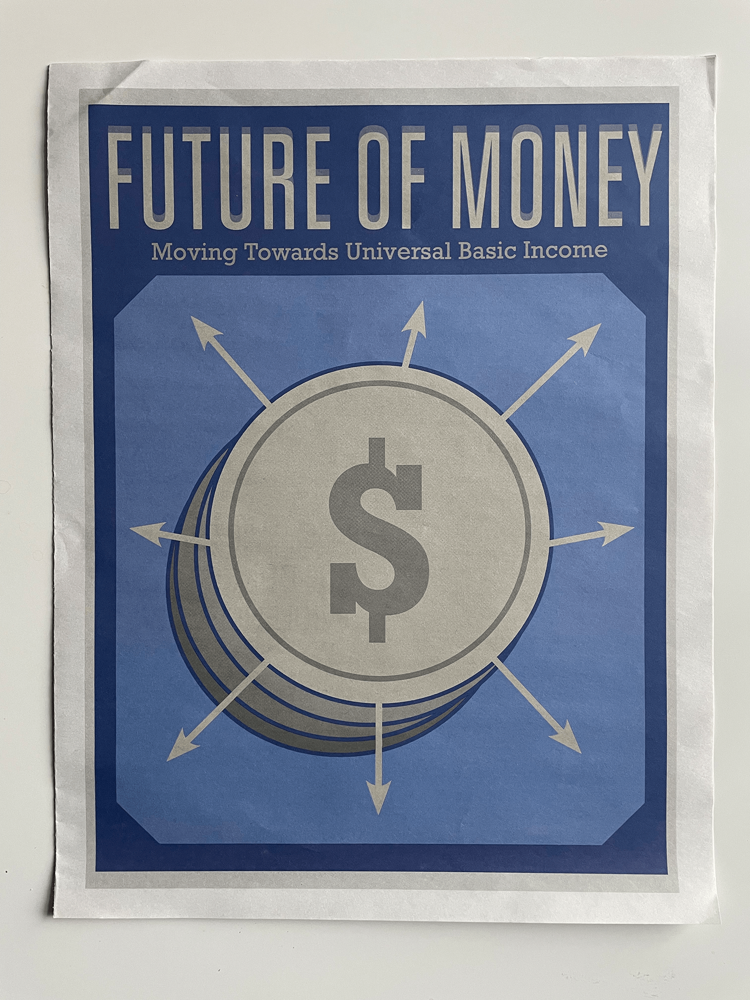
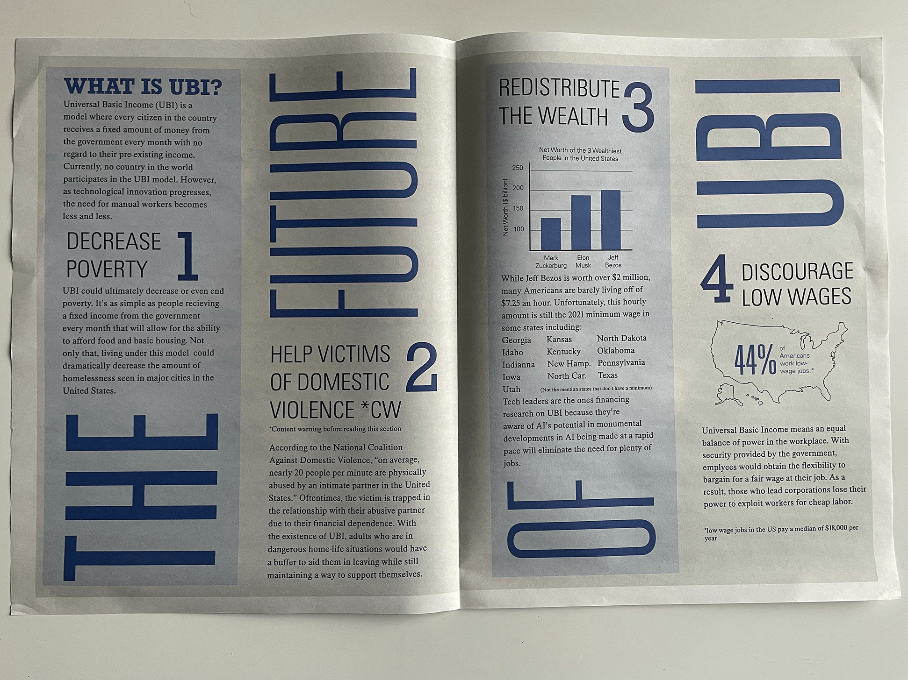
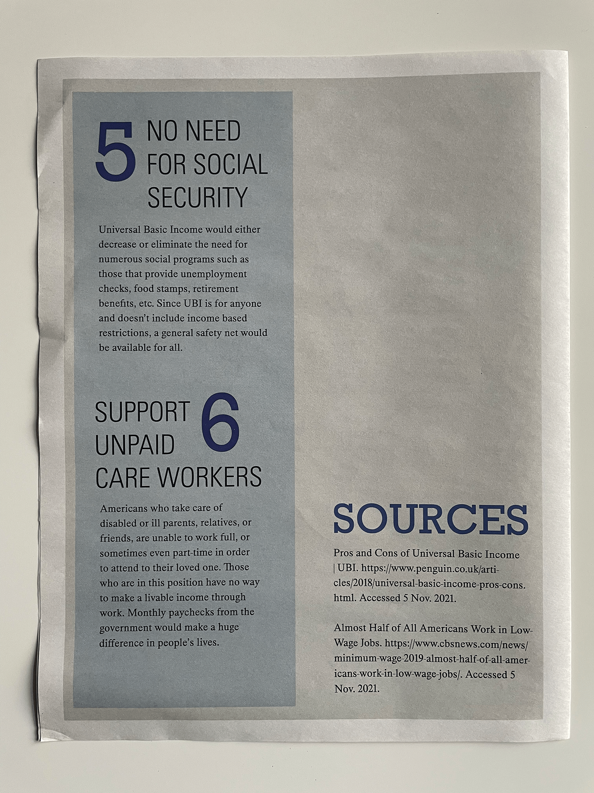
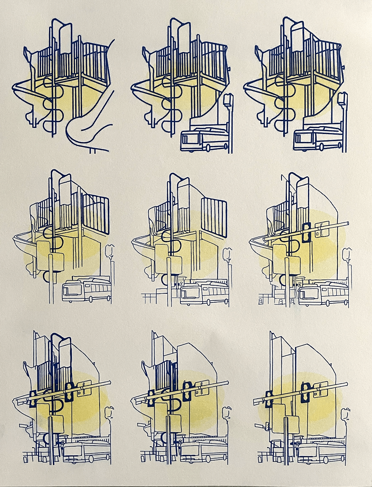

Speculative Future
Tools: Adobe InDesign, Adobe Illustrator, Risograph, Newspaper Club (for printing)
A Speculative Anthology is a group project I worked on during fall semester of 2021 with Jennifer Bui and Megan Meyer. We explored three different topics relating to the future of workplace life in America. My role and focus was to research the potential impact of a universal basic income system. With the research I collected, I designed a double-sided spread to be printed on newsprint paper through Newspaper Club, a printing company located in the UK. Our prints were featured in an exhibition at Studio Two Three in early December.
Studio Two Three exhibition:
My broadsheet print, FUTURE OF MONEY, alongside my groupmate's work.

Broadsheet size prints:



Risograph:
To accompany our broadsheets, the three of us decided to include a risograph of a design we created early in our research that illustrates the transition from early childhood play to the professional worklife of adults. Our process included taking both digital and film pictures of a playground and then some of downtown Richmond. We used Adobe Photoshop to combine the images for the transition. Lastly, the three of us traced over the photoshoped images to create the outlines.
